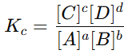
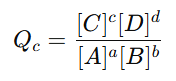

MENALAR
Setelah mengamati perubahan warna pada larutan kobalt(II) klorida, langkah selanjutnya adalah menganalisis hubungan antara perubahan kondisi sistem dengan arah pergeseran kesetimbangan.
Pada sistem kobalt(II) klorida berlaku reaksi kesetimbangan:
Co(H2O)62+(aq) + 4Cl⁻ (aq) ⇌ CoCl4 2− (aq) + 6H2O(l)
Larutan berwarna merah muda menunjukkan dominasi ion Co(H2O)62+
Larutan berwarna biru menunjukkan dominasi ion CoCl42−
Jika konsentrasi salah satu zat ditambah, sistem akan bergeser menjauhi zat tersebut.
Contoh pada percobaan:
- Penambahan HCl meningkatkan konsentrasi ion Cl⁻.
- Sistem bergeser ke kanan.
- Warna larutan berubah menjadi biru karena lebih banyak CoCl42− terbentuk.
Sebaliknya:
- Jika ditambahkan air (pengenceran), konsentrasi Cl⁻ menurun.
- Sistem bergeser ke kiri.
- Warna kembali menjadi merah muda.
Artinya, sistem selalu berusaha menyeimbangkan kembali perubahan yang terjadi.
Perubahan suhu memengaruhi arah pergeseran kesetimbangan dan juga nilai tetapan kesetimbangan (K). Hal ini karena suhu berhubungan langsung dengan energi panas yang terlibat dalam reaksi.
Dalam kesetimbangan, panas dapat dianggap sebagai zat reaksi.
Reaksi endoterm → panas bertindak sebagai pereaksi
Reaksi eksoterm → panas bertindak sebagai produk
⭐ Reaksi eksoterm (melepaskan panas)
Jika reaksi ke arah kanan bersifat eksoterm, berarti reaksi tersebut menghasilkan panas.
Contoh:
N₂(g) + 3H₂(g) ⇌ 2NH₃(g) ΔH < 0
Artinya, pembentukan NH₃ menghasilkan panas.
Ketika suhu dinaikkan, sistem memperoleh tambahan panas sehingga kesetimbangan bergeser ke kanan dan jumlah NO₂ meningkat. Pada kondisi ini, nilai tetapan kesetimbangan (K) juga bertambah. Sebaliknya, ketika suhu diturunkan, panas yang tersedia berkurang sehingga kesetimbangan bergeser ke kiri dan jumlah N₂O₄ meningkat, disertai penurunan nilai K. Dengan kata lain, sistem cenderung memanfaatkan panas yang diberikan untuk mendukung reaksi endoterm.
⭐ Reaksi eksoterm (melepaskan panas)
Jika reaksi ke arah kanan bersifat eksoterm, berarti reaksi tersebut menghasilkan panas.
Contoh:
N₂(g) + 3H₂(g) ⇌ 2NH₃(g) ΔH < 0
Artinya, pembentukan NH₃ menghasilkan panas.
Ketika suhu dinaikkan, sistem berusaha mengurangi kelebihan panas sehingga kesetimbangan bergeser ke kiri dan pembentukan NH₃ berkurang, serta nilai K menurun. Sebaliknya, ketika suhu diturunkan, sistem cenderung menghasilkan panas sehingga kesetimbangan bergeser ke kanan dan pembentukan NH₃ meningkat, diikuti kenaikan nilai K. Dengan demikian, pada reaksi eksoterm sistem cenderung menghindari panas tambahan yang diberikan dari luar.
Untuk reaksi gas, perubahan tekanan selalu berkaitan dengan perubahan volume wadah. Hal ini terjadi karena partikel gas bebas bergerak sehingga jumlah tumbukan antarpartikel dipengaruhi oleh ruang yang tersedia.
Contoh reaksi:
N₂(g) + 3H₂(g) ⇌ 2NH₃(g)
Jumlah mol gas:
kiri = 4 mol
kanan = 2 mol
Artinya, sisi kanan memiliki jumlah partikel gas lebih sedikit.
⭐ Jika tekanan diperbesar (volume diperkecil)
Ketika volume wadah diperkecil, partikel gas menjadi lebih rapat sehingga tekanan meningkat. Berdasarkan Prinsip Le Chatelier, sistem akan menyesuaikan diri dengan mengurangi tekanan, yaitu dengan bergeser ke sisi yang memiliki jumlah mol gas lebih sedikit.
Akibatnya:
- sistem bergeser ke kanan
- pembentukan NH₃ meningkat
- jumlah total mol gas berkurang
👉 Tujuannya: menurunkan tekanan kembali.
⭐ Jika tekanan diperkecil (volume diperbesar)
Ketika volume diperbesar, partikel gas menjadi lebih renggang sehingga tekanan menurun. Sistem akan menyesuaikan diri dengan meningkatkan tekanan, yaitu bergeser ke sisi dengan jumlah mol gas lebih banyak.
Akibatnya:
- sistem bergeser ke kiri
- pembentukan N₂ dan H₂ meningkat
- jumlah total mol gas bertambah
👉 Tujuannya: menaikkan tekanan kembali.
Setelah melakukan pengamatan perubahan warna larutan cobalt(II) chloride dan menyusun pertanyaan ilmiah, tahap berikutnya adalah menalar. Pada tahap ini, anda menggunakan data observasi, konsep kesetimbangan, serta Prinsip Le Chatelier untuk membangun penjelasan ilmiah tentang arah pergeseran kesetimbangan.
Dalam sains, penalaran berfungsi sebagai jembatan antara fakta empiris dan teori. Konsep pergeseran kesetimbangan tidak muncul secara tiba-tiba, tetapi berkembang dari analisis pola eksperimen yang menunjukkan bahwa sistem kesetimbangan selalu merespons perubahan kondisi.
🔬 Penalaran dari Fenomena Cobalt(II)
Berdasarkan pengamatan perubahan warna larutan cobalt(II), ilmuwan menalar bahwa:
• sistem mengandung dua spesies kompleks yang berada dalam kesetimbangan
• perubahan konsentrasi atau suhu menyebabkan perubahan komposisi sistem
• warna larutan mencerminkan dominasi spesies tertentu
• keadaan stabil tidak berarti reaksi berhenti
• sistem mencapai kesetimbangan baru setelah gangguan
Penalaran ini memperkuat pemahaman bahwa kesetimbangan bersifat dinamis dan dapat bergeser.
⚖️ Jejak Ilmiah Lahirnya Prinsip Le Chatelier
Melalui berbagai eksperimen reaksi reversibel, ilmuwan menemukan pola yang konsisten:
• penambahan zat tertentu mengubah komposisi kesetimbangan
• perubahan suhu memengaruhi arah reaksi dominan
• perubahan tekanan pada sistem gas mengubah jumlah mol gas dominan
Dari pola tersebut, Henri Le Chatelier menalar bahwa sistem kesetimbangan memiliki kecenderungan umum untuk menyesuaikan diri terhadap gangguan.
👉 Prinsip Le Chatelier lahir sebagai generalisasi hasil eksperimen, bukan hasil satu penelitian tunggal.
⚗️ Penalaran Mekanistik Pergeseran Kesetimbangan
Dalam tahap menalar, pergeseran kesetimbangan dijelaskan melalui hubungan sebab–akibat:
✔️ Perubahan konsentrasi
Penambahan ion Cl⁻ meningkatkan jumlah pereaksi sehingga sistem menurunkan gangguan dengan membentuk lebih banyak produk.
➡️ Kesetimbangan bergeser ke kanan
➡️ Kompleks biru meningkat
✔️ Perubahan suhu
Jika reaksi pembentukan kompleks biru bersifat endoterm, maka kenaikan suhu akan mendorong reaksi ke arah tersebut.
➡️ Sistem “menggunakan” panas sebagai pereaksi
✔️ Perubahan tekanan (sistem gas)
Sistem akan bergeser ke sisi dengan jumlah mol gas lebih kecil untuk menurunkan tekanan.
➡️ Penalaran berbasis teori tumbukan dan hukum gas
Pada tahap ini, kamu tidak hanya menggunakan Prinsip Le Chatelier secara kualitatif, tetapi juga memahami dasar matematis yang menjelaskan mengapa kesetimbangan dapat bergeser. Dalam sains, pendekatan matematis lahir dari upaya ilmuwan menjelaskan pola data eksperimen secara kuantitatif.
Konsep kuosien reaksi (Q) muncul sebagai hasil perkembangan konsep tetapan kesetimbangan (K) ketika ilmuwan menyadari bahwa sistem tidak selalu berada pada keadaan setimbang.
🔬 Asal-Usul Ilmiah Kuosien Reaksi (Q)
Pada abad ke-19, melalui penelitian Guldberg dan Waage (Hukum Aksi Massa), ilmuwan menemukan bahwa pada keadaan setimbang terdapat hubungan matematis tetap antara konsentrasi zat:

Namun, eksperimen lanjutan menunjukkan bahwa selama reaksi berlangsung menuju kesetimbangan:
• konsentrasi zat berubah terhadap waktu
• perbandingan konsentrasi belum mencapai nilai tetap
• sistem terus bergerak menuju nilai kesetimbangan
Hal ini menimbulkan pertanyaan ilmiah:
👉 Bagaimana menggambarkan keadaan sistem sebelum mencapai kesetimbangan?
Untuk menjawabnya, ilmuwan memperkenalkan konsep kuosien reaksi (Q) sebagai bentuk umum dari ekspresi K yang berlaku pada kondisi sesaat.

Dengan demikian, Q lahir sebagai generalisasi matematis dari K untuk menggambarkan kondisi non-setimbang.
Qc = Kc , reaksi telah mencapai kesetimbangan. Jika Qc = Kc, reaktan ⇌ produk
Qc < Kc , reaksi akan berlangsung dari arah kiri ke kanan (pembentukan produk) hingga mencapai kesetimbangan kimia (Qc = Kc). Jika Qc < Kc, reaktan → produk
Qc > Kc , reaksi akan berlangsung dari arah kanan ke kiri (pembentukan reaktan) hingga mencapai kesetimbangan kimia (Qc = Kc). Jika Qc > Kc, reaktan ← produk